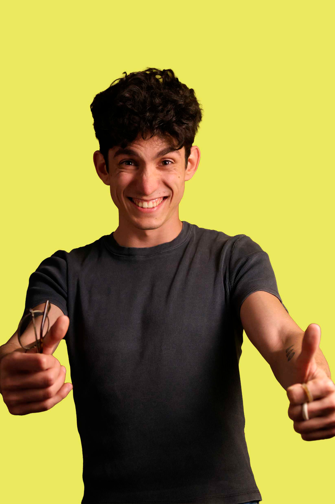

Alfonso Marín Parra, ilustrador, background artist y concept artist especializado en el desarrollo visual de entornos y narrativa. Su trabajo explora la creación de mundos a través del diseño ambiental y el diseño de props. Actualmente compagina su labor artística con la gestión administrativa de Trazo, participando a día de hoy en distintos proyectos de concept art e ilustración.